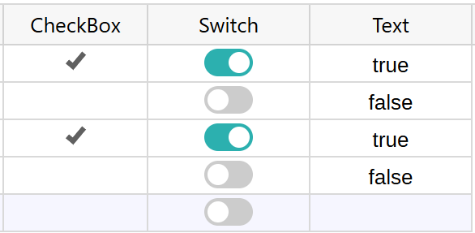
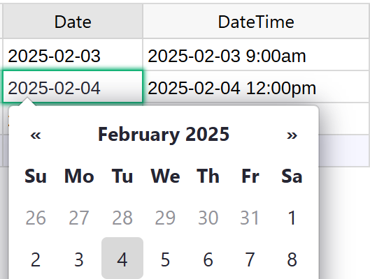

Entering data#
A spreadsheet-like grid is a great way to see data. In Grist, this is the view offered by the default page widget called “Table”.
As in a spreadsheet, you can use the mouse or arrow keys to move around the
cells of a table. To start entering data into a selecte cell, either start
typing, hit Enter, or double-click the cell.
Editing cells#
While editing a cell, several keys are special:
Escapecancels the operation and restores the previous value in the cell.Tab,Shift + Tabsaves your entry and moves your cursor to the next or previous cell.Entersaves your entry and moves your cursor to the next row.Shift + Enteradds a newline inside your cell.
Copying and pasting#
You can copy data from Grist or paste data into it. If the pasted range is longer than the available records, new records will be added.
Note that Grist does not create new columns automatically. If the pasted data has more columns than the grid displays, extra columns will be omitted.
Data entry widgets#
In Grist, columns have types. In addition to typing in values, many column types offer specialized widgets for entering data more conveniently.
Here are some of the most useful ones:
- Toggle. A “Toggle” column shows True/False values, and can show
them as a “Checkbox” or as a “Switch” widget, which you can select in the
column options. You can toggle a value in such a cell by clicking the check
mark or the switch, or by hitting
Space.

- Date and DateTime. Hitting
Enteron such a cell will open a calendar to pick a date.

- Choice and Reference. Typing into a cell of one of these types will produce an auto-complete dropdown menu.